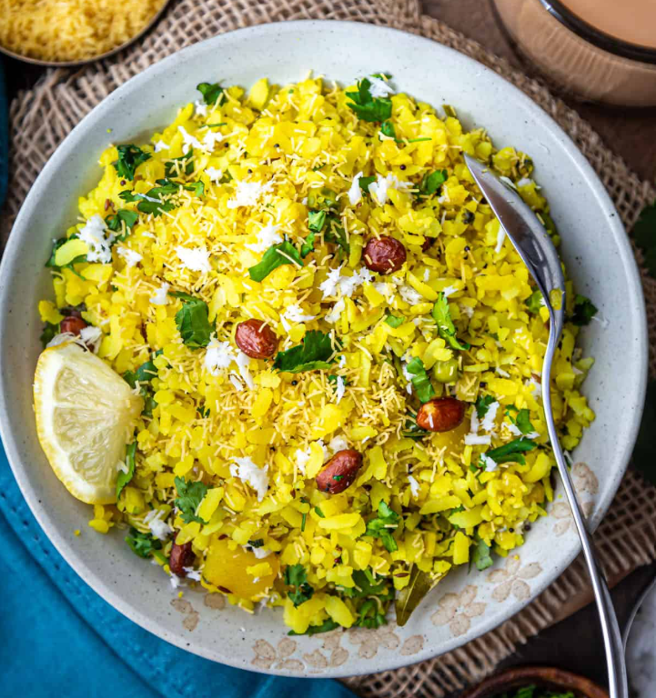

Favourite Read
The Kite Runner
This novel explores friendship, choices, guilt, and redemption. It is one of my favourite books because of its emotional storytelling.
A LITTLE ABOUT MY INTERESTS
Stories that touch my heart and flavours that make my day.
MY BOOKSHELF
This novel explores friendship, choices, guilt, and redemption. It is one of my favourite books because of its emotional storytelling.

This book explains how small habits and consistent efforts can bring positive changes in our lives.
A TASTE OF HOME

A light, tasty and comforting Indian breakfast made with flattened rice.